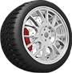
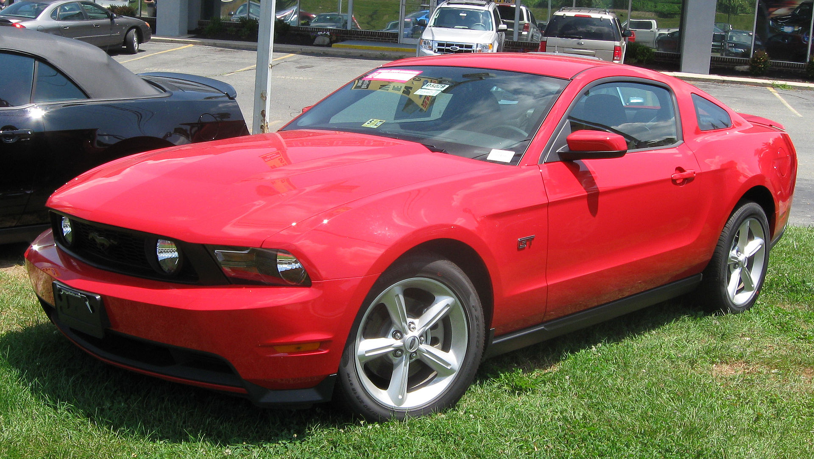
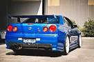
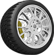
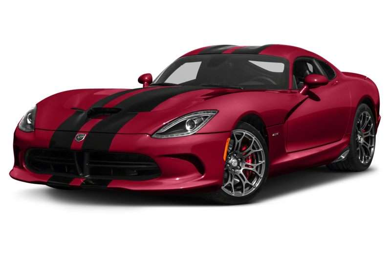
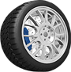
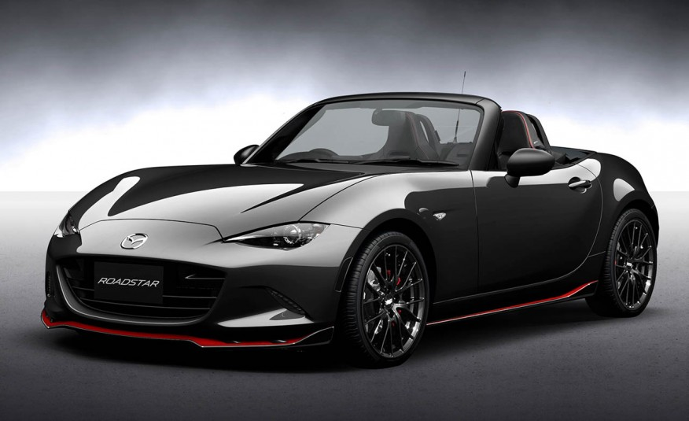

- A Mustang Gen 5Ford introduced a redesigned 2005 model year Mustang at the 2004 North American International Auto Show, codenamed "S-197," that was based on the new D2C platform. Developed under the direction of Chief Engineer Hau Thai-Tang, a veteran engineer for Ford's IndyCar program under Mario Andretti, and exterior styling designer Sid Ramnarace, the fifth-generation Mustang's styling echoes the fastback Mustang models of the late-1960s. Ford's senior vice president of design, J Mays, called it "retro-futurism." The fifth-generation Mustang was manufactured at the Flat Rock Assembly Plant in Flat Rock, Michigan. For the 2005 to 2010 production years, the base model was powered by a 210 hp (157 kW; 213 PS) cast-iron block 4.0 L SOHC V6, while the GT used an aluminum block 4.6 L SOHC 3-valve Modular V8 with variable camshaft timing (VCT) that produced 300 hp (224 kW; 304 PS). Base models had a Tremec T5 5-speed manual transmission with Ford's 5R55S 5-speed automatic being optional. Automatic GTs also featured this, but manual GTs had the Tremec TR-3650 5-speed.
- Refurbished Skyline GT-RThe Nissan Skyline GT-R hardtop arrived in September 1972 but only lasted until March 1973, when Nissan ceased its production. The oil crisis saw many people preferring economy cars and high-performance sports cars were looked down upon. Nissan pulled out of Motor Racing, so there was no purpose to the GT-R. It was not officially exported anywhere, although Nissan contemplated exporting to Australia. Only 197 KPGC110 GT-Rs were ever sold in Japan,[13] through specialist Nissan Performance shops (before it was called NISMO). This was the last GT-R for 16 years until the BNR32 in 1989.
- Dodge ViperThe Dodge Viper is a sports car manufactured by Dodge (SRT for 2013 and 2014), a division of FCA US LLC from 1992 through 2017 having taken a brief hiatus from 2010-2013. Production of the two-seat sports car began at New Mack Assembly in 1991 and moved to Conner Avenue Assembly in October 1995.
- Mazda R3The R3 version was introduced for the 2009 year model. The R3 package added slightly improved suspension over the base model by adding Bilstein shock absorbers and a foam filled front crossmember to improve rigidity. The R3 also came with 19-inch forged aluminum-alloy wheels and high performance tires. On the exterior, the R3 had a different, lower front bumper sporting a splitter, lower side sills, and a standard rear spoiler. There is a pair of special Recaro seats up front, along with the same 300-watt Bose audio system, Bluetooth, and Mazda advanced keyless entry and start system. No electric sunroof was offered in the R3 model.